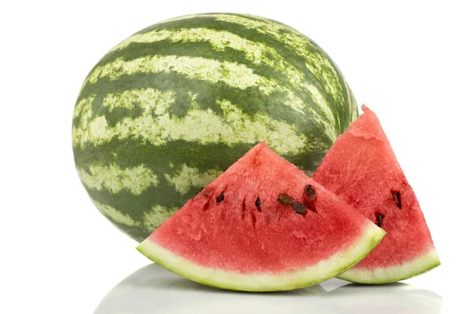
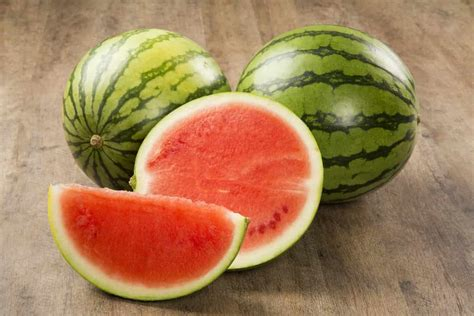
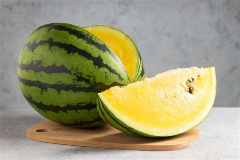
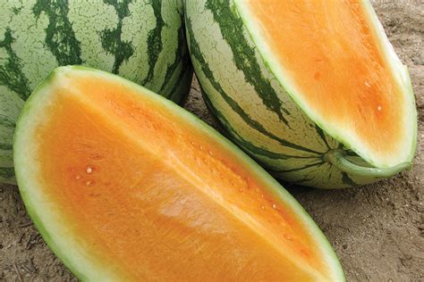
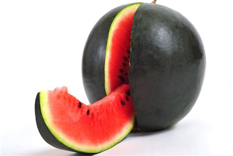

Watermelon Varieties
Watermelons come in many shapes, sizes, and colors. From the classic red watermelon to unique yellow and orange varieties, each type offers something different in taste and appearance.
Watermelon Info
Click a watermelon to learn more about it!
Seeded Watermelon

Traditional watermelon with black seeds. Known for strong flavor and juicy texture.
Seedless Watermelon

A popular modern variety that is easier to eat, with very small or no visible seeds.
Yellow Watermelon

Sweet and honey-like flavor with bright yellow flesh instead of red.
Orange Watermelon

A rare variety with orange-colored flesh and a slightly tropical taste.
Icebox Watermelon

Smaller melons perfect for fitting in a refrigerator. Great for small households.